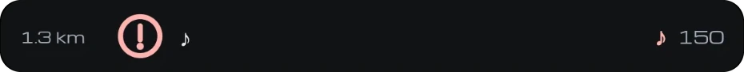
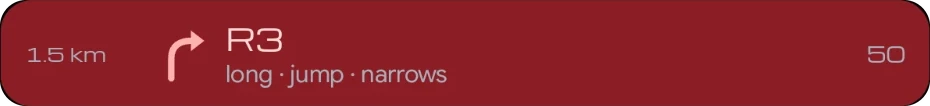
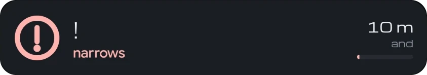
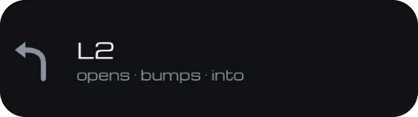
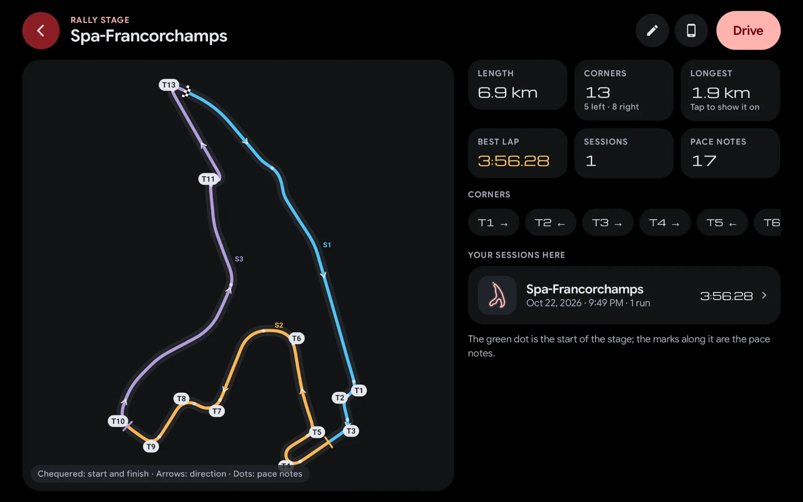

Notes from your own drive
Every corner measured on your recce: direction, severity and length, and the distance between notes.
Stage timing from start line to stop control, pace notes written from your recce and called by a co-driver voice, and regularity by section.
For rallies on closed roads. Check your event’s rules on electronic devices.
ProDashLink Racing is part of Pro. The performance tests are free. See plans


Standing start at the start line, or a flying start. Finish at the line or at the stop control. Known stages are recognised when you arrive, with the pace notes ready.
For rallies on closed roads. Check your event’s rules on electronic devices.
Pace notes usually mean a co-driver with a notebook, or specialist rally kit. DashLink writes them from one slow recce drive, on the screen already in your car.





Recce at legal speeds and under your event’s rules; time stages on closed roads only. Pace notes are generated and can be wrong, so check them before you rely on them. Check your event’s rules on electronic devices.
Caution, crest, jump, narrows, bumps and more, dropped on the route exactly where you are. Try it.
Set up steering-wheel buttons to add calls and voice notes without touching the screen.
Corners, stops and slow sections are found on their own.
Every corner measured on your recce: direction, severity and length, and the distance between notes.
Record a voice memo on the recce and it sits in the notes at exactly that spot.
Each note is called ahead of time, linked when corners run together: into, and, opens.
Change a corner, add a warning or remove a note. Every note and its distance on one screen.
Steering-wheel buttons mark calls and record voice notes during the recce.
Recce, notes and stage all run on the head unit. No internet needed in the forest.
Hold a set average speed by section, with live early/late, distance calibration and splits.
For regularity events on closed or controlled routes. Check your event’s rules on electronic devices.
A map with coloured sectors, direction arrows and numbered corners. Length, corners left and right, the longest straight, your best lap, the pace notes and every session you’ve driven there. Tap Drive to start.
Import and view tracks free; drive a session with Pro.

Import a GPX or KML of the route from your phone or a file. A route that isn’t a closed loop becomes a stage, with pace notes generated for you.
Import and view free; drive a session with Pro.
Use your steering-wheel buttons for Racing: mark, voice, repeat and mode.
DashLink Racing is for track days, rallies on closed roads, recce and private test venues. Never time yourself on public roads. On first use the app asks you to accept its safety terms. For rallies and regularity events: check your event’s rules on electronic devices.
Try every Racing feature free during your trial. The performance tests stay free for good.
| Feature | Free | Drive | Pro |
|---|---|---|---|
| Dashboard (Dock), trips, fuel, logbook, car care | Included | Included | Included |
| Speedometers: Digital, Chrono, Minimal | Included | Included | Included |
| Performance tests: 0–100, braking, 80–120, dyno, stats | Included | Included | Included |
| Bluetooth music on the dashboard | Included | Included | Included |
| Android Auto (USB, wireless, self mode) and auto-start | Not included | Included | Included |
| DashLink Racing: track day, rally, recce + pace notes, regularity (TSD), saved-track sessions, coach, session analysis | Not included | Not included | Included |
| Premium speedometers: Corsa, Sport, Hyper | Not included | Not included | Included |
| Theme presets (all except Signature) and accent colours | Not included | Not included | Included |
| Home-screen widgets, steering-wheel key mapping, phone sensors | Not included | Not included | Included |
Every feature is unlocked during your free trial.
No. DashLink Racing is for closed courses only: track days, rallies on closed roads, recce and private test venues. Never time yourself on public roads.
No. DashLink uses your head unit’s GPS. For faster, more precise timing you can pair a phone running DashLink Wireless (phone sensors, Pro).
Check your event’s rules on electronic devices. Rules differ between organisers, especially for rallies and regularity events.
Yes. Send sessions, laps, tracks and pace notes to your phone over a direct, encrypted link, then export GPX or CSV. See DashLink Wireless.
Try all of it free during your trial. Afterwards DashLink Racing is part of Pro. The performance tests (0–100, braking, 80–120 and the road dyno) stay free.
Closed roads only. Check your event’s rules on electronic devices.